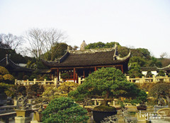

More Website Templates @ cssmoban.com - February 10, 2014!
详情介绍

更多风景
虎丘，位于苏州城西北郊，距城区中心五公里。享有“吴中第一名胜”的美誉。
原名海涌山。据《史记》载吴王阖闾葬于此，传说葬后三日有“白虎蹲其上”，故名。虎丘山高仅三十多米，却有“江左丘壑之表”的风范，绝岩耸壑，气象万千，并有三绝九宜十八景之胜。苏东坡说过：“到苏州而不游虎丘，乃是憾事”。 最为著名的是云岩寺塔和剑池。高耸入云的云岩寺塔已有一千多年历史，是世界第二斜塔，古朴雄奇，早已成为古老苏州的象征。 剑池幽奇神秘，埋有吴王阖闾墓葬的千古之谜以及神鹅易字的美丽传说，风壑云泉，令人流连忘返。 康熙帝曾四次游虎丘。最后一次在康熙四十六年（1707年），还在山上行宫住了一夜。他为虎丘山寺题写雅名“虎阜禅寺”。从此虎丘寺改称虎阜禅寺，金匾至今高悬于头山门。 山上有一石井，传为唐代陆羽所挖，称为“陆羽井”。陆羽是中国第一部茶书----《茶经》的作者。据《苏州府志》记载，陆羽曾长期寓居虎丘，他一边研究茶叶，一边著作《茶经》。他发现虎丘山泉甘甜可口，评为“天下第三泉”。 位于虎丘东麓的万景山庄汇集苏派盆景之精华，借山光塔影，恬美如画。虎丘后山植被茂密，林相丰富，形成了宜人的绿岛小气候，成为鸟类争相栖息的乐园，每至秋日，有万千苍鹭绕塔盘旋，蔚为壮观，成为一绝。 虎丘还是苏州民间重要的集会场所，根据“三市三节”的历史，景区创新推出了春季的艺术花会，展现了牡丹、郁金香，比利时杜鹃、百合等一大批名贵花卉的迷人风姿，具有较高的艺术品味。 与花会相映成趣的是民俗风情浓郁的金秋庙会，再现了山塘出会的盛况，展演了南北交融的民间艺术节目，深得游客喜爱，如今，一年两会已成为著名的特色旅游项目，是苏州的旅游热点。更多风景